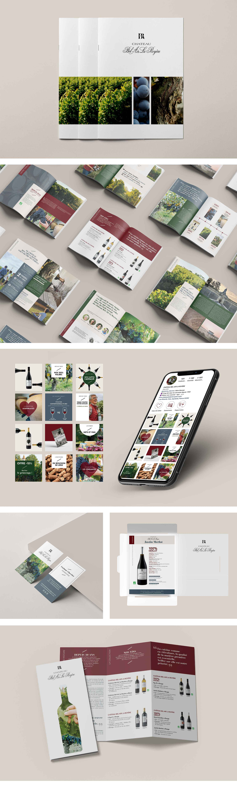

Château Bel-Air la Royère
(Blaye côtes de Bordeaux)
Conception et création du nouvel univers graphique du château (print & réseaux sociaux).
SUPPORTS DE COMMUNICATION
> Réalisation graphique de la brochure (16 pages), dépliant tarifs, fiches techniques, carte de visite.
RÉSEAUX SOCIAUX
> Création d’une charte graphique Instagram comprenant : les typographiques, la charte couleur, les éléments graphiques et les templates (=exemples) graphique réalisés sur CANVA à disposition pour la Community Manager en charge des publications.
> Accompagnement stratégique et création de publications, stories animées et vidéos pour le lancement du nouvel univers graphique sur le feed Instagram.
Je vous accompagne dans la conception de votre identité visuelle et univers graphique qui représente votre entreprise. Pour cela j'élabore une charte graphique composée de différents éléments visuels : typographie, couleurs, illustrations, composition... L'objectif est de s'appuyer sur une ligne artistique et de s'y référer. C'est un point essentiel pour la mémorisation et la notoriété de votre marque ! Tout cela permet une cohérence graphique et une meilleure reconnaissance par les consommateurs !